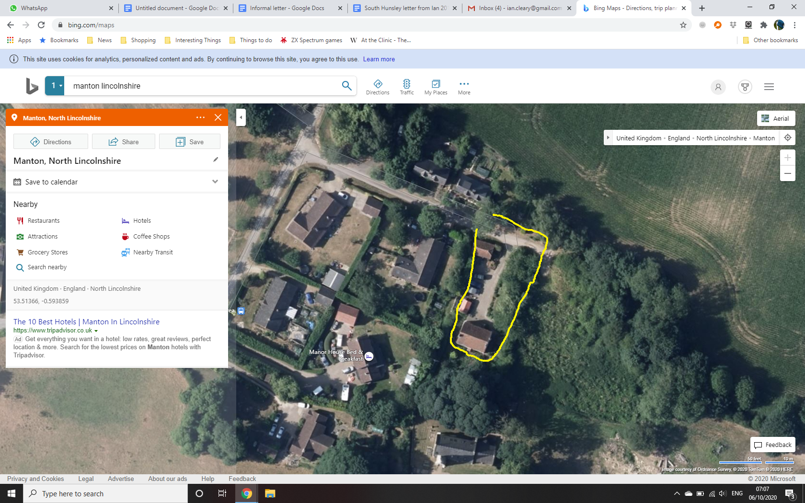

The Old Rectory
Manton, North Lincolnshire DN21 4JT — a house history from construction to the present day
Summary
The Old Rectory is the pre-1855 parsonage of Manton — a stone parsonage of unproven date (EPC: pre-1900; sandstone/limestone). It is not the 1855 Hooker-designed rectory; that replacement building is now known as Manton Place. Four bedrooms, one bathroom, two receptions, ~143 sqm, EPC F. Not listed.
Its documented residential history runs from the parish clergy (the Dalison family, patrons as well as rectors) through a long schoolmaster chapter — Alfred Rowbottom, head teacher, and family, c.1898 to at least 1921 — to the modern sales of 2016 (£290,000) and 2020 (£339,000, to Ian and Harriet Cleary).
Timeline
Ownership & provenance
Rectors of Manton parish context
After 1855 the rector would have lived in the new rectory (now Manton Place), so post-1855 names belong to the parish story, not to this house.
| Dates | Rector | Note |
|---|---|---|
| from 1568 | John Robotham | Parson; accused of missing evening prayers and Easter communion to play bowls (Maltby, Prayer Book and People) |
| 1601 | Thomas Tompson | Death of predecessor (CCEd) |
| 1603–1614 | Zachary Cawdry | |
| 1660–1677 | Edward Saunders | |
| 1677–1706 | Robert Manton | The surname matches the village |
| from 1706 | Richard Hill | |
| d. 1737 | Josias Morgan | Buried at Manton |
| d. 7 Apr 1792 | Thomas Dalyson | Buried at Manton; the Dalison/Dallison family held the advowson |
| 1841 | Unknown | The Clergy List 1841 (1st ed.) lists the benefice with patron "Dalison, esq."; the incumbent's name is unreadable in the scan gap |
| c.1850–1869 | John Beauvoir Dalison, M.A. | B. 1822, Merton College, Oxford. Probable last clerical occupant of the old parsonage before the 1855 move (White's 1856, p. 601). Married 1850; left for Upwell, Norfolk, 1870 |
| 1870 – between 1889 and 1896 | John Winfield Hallam | Kelly's 1885: "rector since 1870". Resident in the new rectory (now Manton Place) — parish context only |
| by 1896 – ? | Agnew Walter Giles Giffard, M.A. | Queen's College, Oxford (Kelly's 1896, p. 400). Parish context only |
The schoolmaster chapter
From around 1898 the old parsonage housed the village schoolmaster's family — consistent with the "village school of recent erection" recorded in the 1868 gazetteer. Alfred Rowbottom (b. 25 Jun 1859, Brigg; d. 13 Mar 1930) rose from assistant schoolmaster (Brigg 1881; West Lavington, Wiltshire 1891) to schoolmaster and then head teacher at Manton, serving under the Manton School Managers and Lindsey Education Committee. His wife Betsy (b. c.1865, Ashby) and their children — including Lavinia and Kathleen Gladys — are recorded at the Old Rectory in the 1901, 1911 and 1921 censuses: an occupancy spanning at least 23 years.
Census detail via WikiTree transcriptions — a secondary source; the original schedules have not been examined. Kelly's directories 1905/1909/1913 corroborate Alfred at the Old Rectory (per the 12 Sep 2026 report; directories not re-examined).
Modern ownership
| Period | Owner | Evidence |
|---|---|---|
| 1921 – 2016 | Unknown | No occupants traced between 1921 and 2016 gap |
| 14 Oct 2016 – 23 Oct 2020 | Owner unknown by name | Land Registry sale £290,000 (14 Oct 2016); sold again £339,000 (23 Oct 2020) |
| 23 Oct 2020 – present | Ian and Harriet Cleary | Land Registry £339,000; HomeProtect policy K23/0549284 (period from 23/10/2020) |
Recorded sales
| Date | Price | Type | Source |
|---|---|---|---|
| 14 Oct 2016 | £290,000 | Detached freehold | Land Registry (corroborated by housepricehistory.co.uk DN21 4JT page) |
| 23 Oct 2020 | £339,000 | Detached freehold — purchase by Ian and Harriet Cleary | Land Registry + HomeProtect policy K23/0549284 |
No other open-market sales found on the free sources checked. propertymarketintel.com (Land Registry sourced) records the house as 4-bed with both sales: £290,000 on 14 Oct 2016 and £339,000 on 23 Oct 2020. Neither the 2016 nor the 2020 listing page survives in the Wayback Machine (Rightmove blocks archiving; the Manton agents' domains have no archived captures). For neighbourhood context: The Old School House, same postcode, sold 18 Jan 2013 for £415,000 — the schoolhouse that pairs with the Rowbottom story.
Occupants
The Rowbottoms new finding, Sep 2026
Alfred Rowbottom (b. 25 Jun 1859, Brigg; d. 13 Mar 1930, Glanford Brigg district; buried Brigg Cemetery), son of John (shoemaker) and Martha Rowbottom (née Cox) of Brigg.
Career arc per the censuses: 1881 — assistant school master (Brigg, living with parents); 1891 — assistant schoolmaster (West Lavington, Wiltshire); 1901 — schoolmaster (Manton); 1911 — head teacher (Manton); 1921 — head teacher, Manton School Managers, Lindsey Education Committee.
Wife Betsy (b. c.1865, Ashby, Lincolnshire). Children included Florence (b. c.1884), Arthur Percival (b. c.1885), Herbert Alfred (b. c.1886), Lavinia (b. c.1887), Douglas Walter (b. c.1889), Albert Maurice (b. c.1890), Eveline/Evelyn May (b. c.1894, Thorndon, Suffolk), Kathleen Gladys (b. c.1898, Manton).
Inferred move to Manton: between Eveline May's birth (Thorndon, Suffolk, c.1894) and Kathleen Gladys's (Manton, c.1898).
Detail via WikiTree census transcriptions (secondary source — originals not examined); verify against original schedules before treating the 1901/1921 household details as firm.
Before the Rowbottoms, 1841–1891 new finding, Sep 2026
Until 1855 the old parsonage was the rectory, so its occupant was the rector:
- 1841 — the rector, name not recovered. The Clergy List 1841 (1st ed., C. Cox, London) lists "Manton, R., Lincs." with patron "Dalison, esq."; the incumbent's name (p. 131) is unreadable in the scan. It was not John Beauvoir Dalison (b. 1822).
- 1851 inferred — Rev. John Beauvoir Dalison, M.A. (rector by 1856 per White's 1856, p. 601); whether he was instituted before census night (30 Mar 1851) is unconfirmed.
- 1861–1891 — unknown. After 1855 the rector lived in the new rectory; the old parsonage's occupant is named in no directory found, and the censuses are paywalled — except 1891, which FreeCEN has fully transcribed (Manton, piece RG12_2625, Brigg district, 5,604 records) but which needs a live browser session to query.
Census research 30 Sep 2026 (working notes). The Lincolnshire Archives enquiries of 17 Sep 2026 (glebe terriers, parsonage papers, sale files) were acknowledged 24 Sep — pending.
Fabric changes
Documented fabric comes mostly from the March 2016 EPC (taken when the house was marketed for sale). What is known:
- Pre-1900 sandstone/limestone walls (EPC); tile roof; no cellar; not listed; not in a conservation area per the 2020 Statement of Fact (not independently verified) — HomeProtect Statement of Fact, Oct 2020.
- EPC rating F (31; potential B, 81).
- Extension count 1 — the 23 Mar 2016 EPC records one extension (detail unknown; the 2016 sale particulars, not found, would describe it).
- Heating in March 2016 (EPC, "Marketed sale"): main heating electric storage heaters; mains gas: no; hot water by electric immersion (off-peak); secondary heating dual-fuel (mineral and wood) room heaters. Walls sandstone/limestone, no insulation (assumed); pitched roof with 75 mm loft insulation; suspended floor, no insulation; windows recorded as fully double-glazed.
- No documented repairs or alterations beyond the above found in the sources checked — the 2016 and 2020 sale particulars (not found in Gmail; the owner may hold paper copies) remain the best source for fabric changes.
Market value estimate, Sep 2026
Open-market value estimate (late September 2026): £350,000 – £420,000, central view ~£380,000.
At ~143 sqm this implies roughly £2,450–£2,940/sqm. This is a research-based estimate compiled from Land Registry sold prices and live asking data — it is not a formal valuation. Confidence is moderate: in-village evidence is thin and the house's condition is unconfirmed.
How the range was reached
Best in-village anchor: Pathways, Manton — a 4-bed detached house in the same postcode (DN21 4JT), sold for £412,500 in December 2021 (PropertyMarketIntel; Land Registry). December 2021 was near the market peak. Since then the regional picture is flat-to-soft: ONS shows North Lincolnshire +4.5% year-on-year (Jul 2026 vs Jul 2025, all types), but detached-specific sold prices are −2.3% year-on-year per OnTheMarket (avg £279k), and Bricks&Logic says similar properties in this postcode have dropped 10.5% since March 2020.
A time adjustment of roughly flat to −5% puts an equivalent in-order 4-bed in Manton today at ~£390–415k. The Old Rectory then takes a discount for its EPC F (lender/letting constraints, running costs — typically a 5–10% penalty versus an EPC C/D comparable) and its modest 143 sqm internal area for a 4-bed rectory, plus unknown decorative condition. Applying ~5% gives ~£380k.
Comparable sold prices
| Comparable | Area | Sale price | Sale date | Type |
|---|---|---|---|---|
| Pathways star comp | Manton (same postcode) | £412,500 | Dec 2021 | 4-bed detached, freehold |
| 8 East Cross Street | Kirton in Lindsey | £450,000 | Aug 2025 | Detached, freehold (period street) |
| 12 Elizabeth Close | Scotter | £430,000 | Dec 2025 | Detached, freehold |
| 58 The Meadows | Messingham | £396,000 | Jan 2026 | Detached, freehold (modern estate) |
| 56 The Meadows | Messingham | £365,000 | May 2026 | Detached, freehold (modern estate) |
| 12 Highgrove | Messingham | £360,000 | Oct 2025 | Detached, freehold |
| 8 Grove Street | Kirton in Lindsey | £330,000 | Nov 2024 | Detached, freehold |
| 39 Knightsbridge Road | Messingham | £325,000 | Oct 2024 | Detached, freehold |
| 12a East Cross Street | Kirton in Lindsey | £325,000 | Jan 2026 | Detached, freehold (period street) |
| 51 Dunstan Villas | Kirton in Lindsey | £315,000 | Mar 2025 | Detached, freehold |
| 12 Lark Rise | Scotter | £290,000 | Mar 2026 | 4-bed detached, freehold |
| 36 Rooklands | Scotter | £275,000 | Jul 2025 | Detached, freehold |
| 20 The Rookery | Scotter | £495,000 | Nov 2025 | 4-bed detached, 285 sqm, freehold |
Sources: Land Registry via housepricehistory.co.uk (index, crawled Sep 2026); PrimeLocation for 20 The Rookery; PropertyMarketIntel DN21 4JT (Pathways + Old Rectory history). Bedroom counts are not in Land Registry data — bedroom detail only where agents list it. East Cross Street is a Victorian period street, which strengthens the two comps there.
Asking-price context
Village 4-bed detached houses currently on the market via OnTheMarket sit at £325k–£475k (read 30 Sep 2026): High Street, Snitterby £475k (oiro); Mill Court, Waddingham £400k+ (oieo); Spa Hill, Kirton in Lindsey £390k+ (o/o); Selby Close, Kirton in Lindsey £400–425k; High Street, Scotter 5-bed 19th-c former farmhouse £425k+ (o/o); Holme Lane, Bottesford £375k; Saxon Way, Ingham £375k; Walkerith Road, Morton £365k; Gainsborough Road, Lea £370k (reduced); Morton Road £325k; High Street, Messingham £310k. Kirton in Lindsey live 4-bed asking median is £335,000 (home.co.uk, to 26 Sep 2026). The £380k centre sits comfortably mid-range; a renovated, EPC-improved Old Rectory could press toward the £400k+ askers — hence the £420k top.
Local market context, 2026
- ONS: North Lincolnshire avg £180,000 (Jul 2026, provisional), +4.5% YoY; detached £252,000.
- OnTheMarket (Land Registry sold): detached avg North Lincolnshire £279,000, −2.3% YoY; Kirton in Lindsey £253,000 (+6.4% YoY); Messingham £228,000 (−5.2% YoY); Hibaldstow £292,000 (+11.4% YoY) — mixed, town-level swings are large; the rural premium end is softening.
- Time to sell is long: home.co.uk (live, Sep 2026) — Kirton in Lindsey 4-bed avg 149 days on market; Gainsborough avg 122 days (median 94); only 8% of Kirton listings sell in under a month. Detached in North Lincolnshire avg ~180 days on market.
- Direction of travel: flat-to-soft for larger rural period homes; price reductions are appearing (e.g. the Lea listing reduced within 14 days).
Caveats
- No sales at all in DN21 4JT since Dec 2021 (only 5 transactions in 10 years) — Manton-specific evidence is thin; the Pathways comp is nearly 5 years old.
- Condition, grounds size, outbuildings and renovation level of the subject are unknown — the range assumes average decorative order with EPC F; a refurbished/EPC-upgraded house could justify the top end, poor condition the bottom.
- No Zoopla/Rightmove automated estimate was obtainable (signed-out session; Bricks&Logic's page for this address renders as a JS shell).
Full research with per-source notes: compiled 30 Sep 2026. Sources: ONS housing prices in North Lincolnshire; housepricehistory.co.uk (Land Registry mirror); PrimeLocation; PropertyMarketIntel; OnTheMarket; home.co.uk; Bricks&Logic.
Gallery

Sources & gaps
Sources
- WikiTree, Alfred Rowbottom (1859–1930) — census transcriptions 1881/1891/1901/1911/1921; birth/death/burial. wikitree.com/wiki/Rowbottom-335 secondary source
- GenUKI, Manton, Lincolnshire (National Gazetteer 1868 excerpt). genuki.org.uk/big/eng/LIN/Manton
- Wikipedia, Manton, Lincolnshire. en.wikipedia.org/wiki/Manton,_Lincolnshire
- Hull History Centre catalogue, U DX229/128 (1829 copy map of Manton after enclosure). catalogue.hullhistorycentre.org.uk
- housepricehistory.co.uk, DN21 4JT — Old Rectory sales 14 Oct 2016 £290,000; 23 Oct 2020 £339,000; The Old School House 18 Jan 2013 £415,000.
- housepricesintheuk.co.uk, PATHWAYS DN21 4JT page (Manton Place address existence). housepricesintheuk.co.uk
- Energy Performance Certificate, The Old Rectory, Manton DN21 4JT — inspected and lodged 23 Mar 2016, transaction type "Marketed sale", LMK 8296-7527-4030-5357-2922. epcdatabase.co.uk
- The Clergy List for 1841 (1st ed., C. Cox, London) — "Manton, R., Lincs.", patron "Dalison, esq." (Google Books).
- University of Leicester Historical Directories: White's 1856 p. 601; White's 1872 p. 461; Kelly's 1885 p. 571; Kelly's 1889 p. 337; Kelly's 1896 p. 400.
- FreeCEN: 1891 Manton (Lincs), piece RG12_2625 (Brigg registration district), 5,604 records, transcribed — needs a live browser session to query.
- propertymarketintel.com, DN21 4JT sold transactions (Land Registry sourced) — 4 beds; £290,000 on 14 Oct 2016; £339,000 on 23 Oct 2020.
- Census research report, 30 Sep 2026 (working notes): 1841–1891 occupant findings and dead ends.
- Google Books, White's 1872 Lincolnshire (full view), volume VplQAAAAYAAJ — Manton entry at p. 461 (located; full text not extracted).
- CCEd location ID 8317 (Manton, Lincolnshire). theclergydatabase.org.uk (via the 12 Sep 2026 report)
- The 12 Sep 2026 house history report (owner's Google Drive).
- HomeProtect policy K23/0549284 emails (Gmail, 19 Oct 2020).
- Market-value research, 30 Sep 2026: see Market value for per-source links.
Known gaps
- Lincolnshire Archives (pending): enclosure award/map (TNA enrolment KB 122/1196/rot3068 is the backup), glebe terriers, parsonage papers, 1861 faculty papers, parsonage sale files for both rectories, Dalison advowson papers — enquiries of 17 Sep 2026 acknowledged 24 Sep; a study-table visit (or paid research) is likely needed as the online catalogue is buggy.
- Census 1841–1891 (partly resolved, Sep 2026): the 1841 occupant was the rector (name unrecoverable — the Clergy List 1841 scan is garbled; definitely not J. B. Dalison); 1851 was probably Dalison (unconfirmed); 1861–1891 unknown. The 1891 census is transcribed on FreeCEN (piece RG12_2625) — needs a live browser session to query. The 1841 (HO107) and 1851/1861/1871/1881 censuses are paywalled (Findmypast/Ancestry).
- White's 1856 p. 601 and 1872 p. 461 — read the full Manton entries from the originals.
- The Hooker/Manton Place link — the specialist article denied access (403); the 1855-Hooker claim rests on the 12 Sep 2026 report.
- Title register — the owner's order was in progress at the time of the 12 Sep report; the register would give the modern ownership chain and any historic covenants.
- Pre-2016 ownership — conveyancing bundle from the 2020 purchase (estate agent particulars, completion statement) was not found in Gmail; the owner may hold paper copies.
- Device photo library — no device photos were accessible (paired iPhone offline); any historic photos from the 2016 or 2020 sale particulars remain the best source for fabric changes.